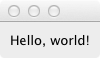

“Hello World” tutorial¶
Our goal in this tutorial is to show a minimal example of an Enaml user interface and introduce a few basic concepts. It sets up a minimal GUI to display a simple message.
Let’s get started with a minimalist “hello world” example. Enaml interfaces are described in a file with the ”.enaml” extension. While the code has some similarities to Python, Enaml is a separate language.
Here is our minimalist .enaml file describing a message-displaying GUI (download here):
#------------------------------------------------------------------------------
# Copyright (c) 2013, Nucleic Development Team.
# All rights reserved.
#------------------------------------------------------------------------------
from enaml.widgets.api import Window, Container, Label
enamldef Main(Window):
attr message = "Hello, world!"
Container:
Label:
text = message
Use the enaml-run utility to run it from the command line with
$ enaml-run hello_world_view.enaml
The resulting GUI looks like this (on Mac OSX):
Let’s take a closer look at the Enaml file.
Enaml Definitions¶
An Enaml view is made up of a series of component definitions that look a lot like Python classes. In the first line of code, we are defining a new component, Main, which derives from Window, a builtin widget in the Enaml library.
enamldef Main(Window):
With this line of code, we have defined the start of a definition block.
In general, we could call this almost anything we want, as long as it is a Python-valid name. In this case, however, by giving it the special name Main we get to run it from the command line with the enaml-run tool. enaml-run looks for a component named Main or a function named main in an .enaml file and runs it as a standalone application.
Definition Structure¶
Inside a definition block, the view is defined in a hierarchical tree of widgets. As in Python , indentation is used to specify code block structure. That is, statements beginning at a certain indentation level refer to the header line at the next lower indentation level. So in our simple example, the Container belongs to Main and the Label belongs to the Container:
enamldef Main(Window):
attr message = "Hello, world!"
Container:
Label:
text = message
The view is made up of a Window containing a Container which in turn contains a Label, whose text attribute is set equal to the message attribute of Main, which has a default value of "Hello, world!". This default value can be changed by the code which creates an instance of Main. (We’ll discuss this in more detail in the next tutorial.)
Just like regular Python objects, the widgets used in an Enaml UI must be defined and/or imported before they can be used. The widgets used in this tutorial are imported from enaml.widgets.api.
Using the Enaml view in Python¶
Now we’ll take a look at how to use the view in Python code. First, we import Enaml:
import enaml
Then we use enaml.imports() as a context manager for importing the Enaml view.
with enaml.imports():
from hello_world_view import Main
Finally, we create a QtApplication object, which is necessary to configure the backend toolkit. After we instantiate the Main widget, show() it and then start the application’s event loop.
app = QtApplication()
view = Main()
view.show()
app.start()